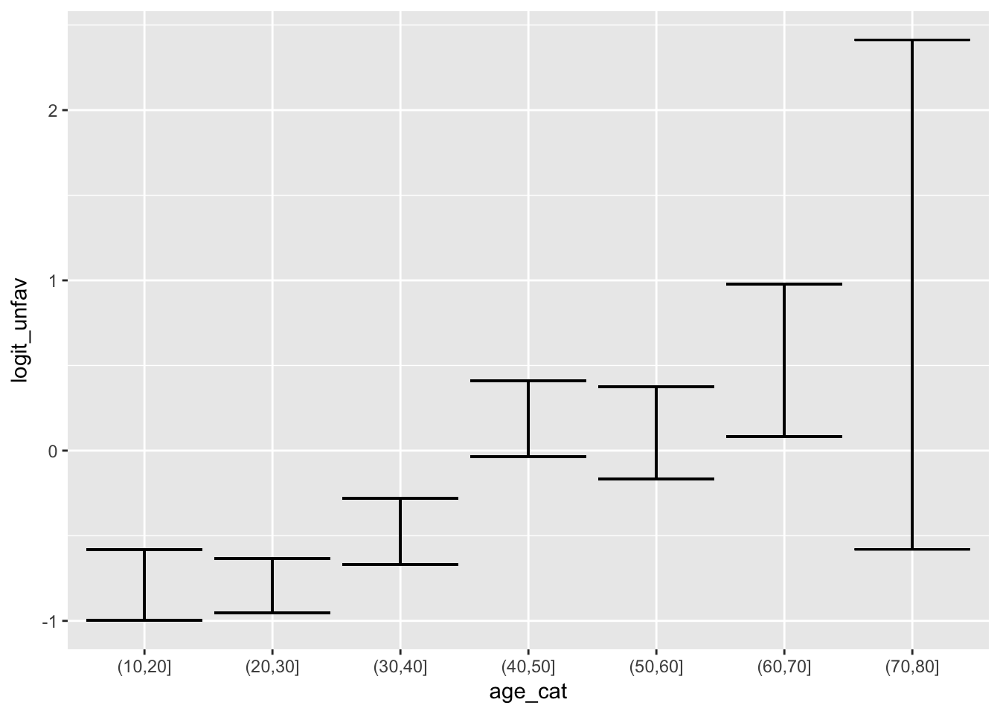
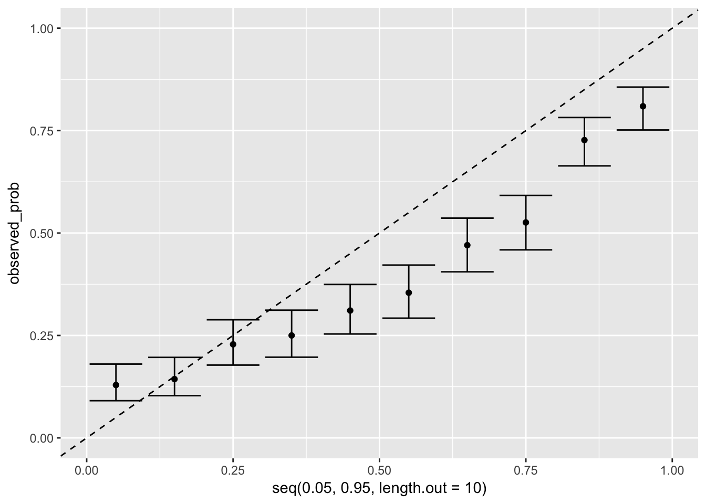
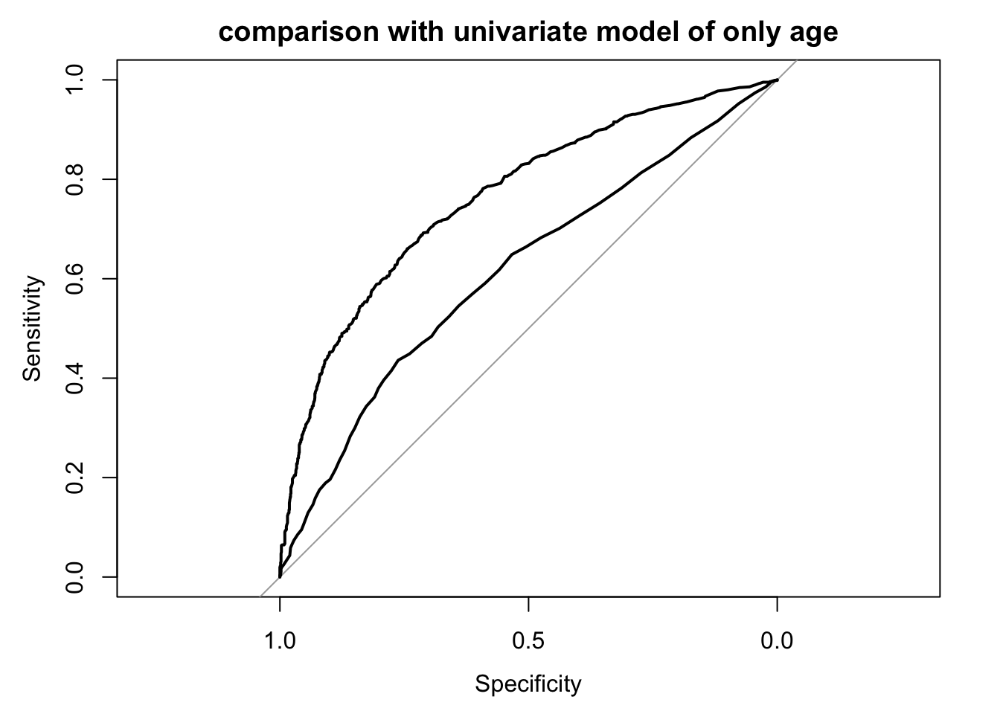

Last updated: 2018-03-13
Code version: fe4c128
library(dplyr)
library(data.table)
library(magrittr)
library(purrr)
library(here) # for tracking working directory
library(ggplot2)
library(epistats)
library(broom)This excercise was intented for SPSS
In this practical exercise we will study the prognosis of patients with traumatic brain injury. We will assess the individual prognostic strength in univariable and multivariable analyses. The aim of the multivariable analysis is to adjust for correlation between prognostic factors, either to adjust for confounding (1) or to predict the prognosis with multiple predictors (2). The data are in SPSS format: “TBI.sav”. See below for a description of the dataset.
Data set traumatic brain injury (TBI.sav, n=2159) Patients are from the International and US Tirilazad trials; distributed here for didactic purposes only. The primary outcome was 6 months Glasgow Outcome Scale (range 1 to 5).
Name Description (coding: no/yes is coded as 0/1) Development (n=2159) Trial Study identification: 74 = Tirilazad international (n=1118) 75 = US (n=1041)
52% 48% d.gos Glasgow Outcome Scale at 6 months: 1 = dead 2 = vegetative 3 = severe disability 4 = moderate disability 5 = good recovery
23% 4% 12% 16% 44% d.mort Mortality at 6 months (0/1) 23% d.unfav Unfavorable outcome at 6 months (0/1) 39% cause Cause of injury 3 = Road traffic accident 4 = Motorbike 5 = Assault 6 = Domestic/fall 9 = Other
39% 20% 6% 17% 18% age Age, in years (median [interquartile range]) 29 [21 - 42] d.motor Admission motor score, range: 1 - 6 (median) 4 d.pupil Pupillary reactivity 1=both reactive 2=one reactive 3= no reactive pupils
70% 14% 16% pupil.i Single imputed pupillary reactivity, 1;2;3 70%/14%/16% hypoxia Hypoxia before / at admission, 1=yes 22% hypotens Hypotension before / at admission, 1=yes 19% ctclass Marshall CT classification, 1 - 6 (median) 2 tsah tSAH at CT, 1=yes 46% edh EDH at CT, 1=yes 13% cisterns Compressed cisterns at CT, 0=no;1=slightly;2=fully 57%/26%/10% shift Midline shift > 5 mm at CT, 1=yes 18% glucose Glucose at admission, mmol/l (median [interquartile range]) 8.2 [6.7 - 10.4] glucoset ph Truncated glucose values (median [interquartile range]) pH (median [interquartile range]) 8.2 [6.7 - 10.4] 7.4 [7.3 - 7.5] sodium Sodium, mmol/l (median [interquartile range]) 140 [137 - 142] sodiumt Truncated sodium (median [interquartile range]) 140 [137 - 142] hb Hb, g/dl (median [interquartile range]) 12.8 [10.9 - 14.3] hbt Truncated hb (median [interquartile range]) 12.8 [10.9 - 14.3] * d. variables denoted ‘derived’.
Exercises
Load in data
require(haven)
tbi <- read_spss(here("data", "TBI.sav"))
str(tbi)Classes 'tbl_df', 'tbl' and 'data.frame': 2159 obs. of 24 variables:
$ trial :Class 'labelled' atomic [1:2159] 74 74 74 74 ...
.. ..- attr(*, "label")= chr "Study identification"
.. ..- attr(*, "format.spss")= chr "A6"
.. ..- attr(*, "display_width")= int 4
.. ..- attr(*, "labels")= Named chr [1:2] "74" "75"
.. .. ..- attr(*, "names")= chr [1:2] "Tirilazad International" "Tirilazad US"
$ d.gos :Class 'labelled' atomic [1:2159] 5 5 5 4 5 5 5 5 5 5 ...
.. ..- attr(*, "label")= chr "GOS at 6 months"
.. ..- attr(*, "format.spss")= chr "F2.0"
.. ..- attr(*, "labels")= Named num [1:5] 1 2 3 4 5
.. .. ..- attr(*, "names")= chr [1:5] "dead" "vegetative" "severe disability" "moderate disability" ...
$ d.mort : atomic 0 0 0 0 0 0 0 0 0 0 ...
..- attr(*, "label")= chr "Mortality at 6 months"
..- attr(*, "format.spss")= chr "F2.0"
$ d.unfav : atomic 0 0 0 0 0 0 0 0 0 0 ...
..- attr(*, "label")= chr "Unfavorable outcome at 6 months"
..- attr(*, "format.spss")= chr "F2.0"
$ cause :Class 'labelled' atomic [1:2159] 4 4 6 4 4 4 3 4 4 6 ...
.. ..- attr(*, "label")= chr "Cause of injury recoded"
.. ..- attr(*, "format.spss")= chr "F2.0"
.. ..- attr(*, "display_width")= int 10
.. ..- attr(*, "labels")= Named num [1:5] 3 4 5 6 9
.. .. ..- attr(*, "names")= chr [1:5] "Road traffic accident" "Motorbike" "Assault" "domestic/fall" ...
$ age : atomic 14 14 14 14 14 14 14 14 14 14 ...
..- attr(*, "label")= chr "Age in years"
..- attr(*, "format.spss")= chr "F2.0"
$ d.motor : atomic 5 4 4 4 5 3 5 5 4 5 ...
..- attr(*, "label")= chr "Admission motor score"
..- attr(*, "format.spss")= chr "F2.0"
$ d.pupil :Class 'labelled' atomic [1:2159] 1 1 1 1 1 1 1 1 1 2 ...
.. ..- attr(*, "label")= chr "Pupillary reactivity"
.. ..- attr(*, "format.spss")= chr "F2.0"
.. ..- attr(*, "labels")= Named num [1:3] 1 2 3
.. .. ..- attr(*, "names")= chr [1:3] "both reactive" "one reactive" "no reactive pupils"
$ pupil.i :Class 'labelled' atomic [1:2159] 1 1 1 1 1 1 1 1 1 2 ...
.. ..- attr(*, "label")= chr "Single imputed pupillary reactivity"
.. ..- attr(*, "format.spss")= chr "F2.0"
.. ..- attr(*, "labels")= Named num [1:3] 1 2 3
.. .. ..- attr(*, "names")= chr [1:3] "both reactive" "one reactive" "no reactive pupils"
$ hypoxia : atomic 0 0 1 0 0 0 0 0 0 0 ...
..- attr(*, "label")= chr "Hypoxia before / at admission"
..- attr(*, "format.spss")= chr "F2.0"
$ hypotens: atomic 0 0 0 0 0 0 0 0 0 0 ...
..- attr(*, "label")= chr "Hypotension before / at admission"
..- attr(*, "format.spss")= chr "F2.0"
$ ctclass : atomic 2 2 4 2 2 2 2 2 2 1 ...
..- attr(*, "label")= chr "CT classification according to Marshall"
..- attr(*, "format.spss")= chr "F2.0"
$ tsah : atomic 0 0 1 0 0 NA 1 1 NA 0 ...
..- attr(*, "label")= chr "tSAH at CT"
..- attr(*, "format.spss")= chr "F2.0"
$ edh : atomic 0 0 0 0 0 0 0 0 0 0 ...
..- attr(*, "label")= chr "EDH at CT"
..- attr(*, "format.spss")= chr "F2.0"
$ cisterns: atomic 1 1 NA 1 1 1 1 2 1 1 ...
..- attr(*, "label")= chr "Compressed cisterns at CT"
..- attr(*, "format.spss")= chr "F2.0"
$ shift : atomic 0 0 NA 1 0 0 0 1 0 0 ...
..- attr(*, "label")= chr "Midline shift > 5 mm at CT"
..- attr(*, "format.spss")= chr "F2.0"
$ d.sysbpt: atomic 119 131 136 137 138 ...
..- attr(*, "label")= chr "Systolic blood pressure (truncated, mm Hg)"
..- attr(*, "format.spss")= chr "F4.0"
$ glucose : atomic 7.7 7.4 7.56 5.7 6 ...
..- attr(*, "label")= chr "Glucose at admission (mmol/l)"
..- attr(*, "format.spss")= chr "F4.2"
$ glucoset: atomic 7.7 7.4 7.56 5.7 6 ...
..- attr(*, "label")= chr "Truncated glucose values"
..- attr(*, "format.spss")= chr "F4.2"
$ ph : atomic 7.35 7.33 7.49 NA NA ...
..- attr(*, "label")= chr "pH"
..- attr(*, "format.spss")= chr "F4.2"
$ sodium : atomic 143 143 141 144 142 138 141 135 137 137 ...
..- attr(*, "label")= chr "Sodium (mmol/l)"
..- attr(*, "format.spss")= chr "F4.1"
$ sodiumt : atomic 143 143 141 144 142 138 141 135 137 137 ...
..- attr(*, "label")= chr "Truncated sodium"
..- attr(*, "format.spss")= chr "F4.1"
$ hb : atomic 15 15 12.8 7.1 8.5 12.3 12.8 9.2 12.8 11 ...
..- attr(*, "label")= chr "hb (g/dl)"
..- attr(*, "format.spss")= chr "F4.1"
$ hbt : atomic 15 15 12.8 7.1 8.5 12.3 12.8 9.2 12.8 11 ...
..- attr(*, "label")= chr "Truncated hb"
..- attr(*, "format.spss")= chr "F4.1"Coerce labelled variables into factors, as R works with factors and labelled variables are foreign to R.
Use the package haven with the function as_factor to get this done while preserving factor labels.
tbi %<>%
mutate_if(is.labelled, as_factor)
str(tbi)Classes 'tbl_df', 'tbl' and 'data.frame': 2159 obs. of 24 variables:
$ trial : Factor w/ 2 levels "Tirilazad International",..: 1 1 1 1 1 1 1 1 1 1 ...
..- attr(*, "label")= chr "Study identification"
$ d.gos : Factor w/ 5 levels "dead","vegetative",..: 5 5 5 4 5 5 5 5 5 5 ...
..- attr(*, "label")= chr "GOS at 6 months"
$ d.mort : atomic 0 0 0 0 0 0 0 0 0 0 ...
..- attr(*, "label")= chr "Mortality at 6 months"
..- attr(*, "format.spss")= chr "F2.0"
$ d.unfav : atomic 0 0 0 0 0 0 0 0 0 0 ...
..- attr(*, "label")= chr "Unfavorable outcome at 6 months"
..- attr(*, "format.spss")= chr "F2.0"
$ cause : Factor w/ 5 levels "Road traffic accident",..: 2 2 4 2 2 2 1 2 2 4 ...
..- attr(*, "label")= chr "Cause of injury recoded"
$ age : atomic 14 14 14 14 14 14 14 14 14 14 ...
..- attr(*, "label")= chr "Age in years"
..- attr(*, "format.spss")= chr "F2.0"
$ d.motor : atomic 5 4 4 4 5 3 5 5 4 5 ...
..- attr(*, "label")= chr "Admission motor score"
..- attr(*, "format.spss")= chr "F2.0"
$ d.pupil : Factor w/ 3 levels "both reactive",..: 1 1 1 1 1 1 1 1 1 2 ...
..- attr(*, "label")= chr "Pupillary reactivity"
$ pupil.i : Factor w/ 3 levels "both reactive",..: 1 1 1 1 1 1 1 1 1 2 ...
..- attr(*, "label")= chr "Single imputed pupillary reactivity"
$ hypoxia : atomic 0 0 1 0 0 0 0 0 0 0 ...
..- attr(*, "label")= chr "Hypoxia before / at admission"
..- attr(*, "format.spss")= chr "F2.0"
$ hypotens: atomic 0 0 0 0 0 0 0 0 0 0 ...
..- attr(*, "label")= chr "Hypotension before / at admission"
..- attr(*, "format.spss")= chr "F2.0"
$ ctclass : atomic 2 2 4 2 2 2 2 2 2 1 ...
..- attr(*, "label")= chr "CT classification according to Marshall"
..- attr(*, "format.spss")= chr "F2.0"
$ tsah : atomic 0 0 1 0 0 NA 1 1 NA 0 ...
..- attr(*, "label")= chr "tSAH at CT"
..- attr(*, "format.spss")= chr "F2.0"
$ edh : atomic 0 0 0 0 0 0 0 0 0 0 ...
..- attr(*, "label")= chr "EDH at CT"
..- attr(*, "format.spss")= chr "F2.0"
$ cisterns: atomic 1 1 NA 1 1 1 1 2 1 1 ...
..- attr(*, "label")= chr "Compressed cisterns at CT"
..- attr(*, "format.spss")= chr "F2.0"
$ shift : atomic 0 0 NA 1 0 0 0 1 0 0 ...
..- attr(*, "label")= chr "Midline shift > 5 mm at CT"
..- attr(*, "format.spss")= chr "F2.0"
$ d.sysbpt: atomic 119 131 136 137 138 ...
..- attr(*, "label")= chr "Systolic blood pressure (truncated, mm Hg)"
..- attr(*, "format.spss")= chr "F4.0"
$ glucose : atomic 7.7 7.4 7.56 5.7 6 ...
..- attr(*, "label")= chr "Glucose at admission (mmol/l)"
..- attr(*, "format.spss")= chr "F4.2"
$ glucoset: atomic 7.7 7.4 7.56 5.7 6 ...
..- attr(*, "label")= chr "Truncated glucose values"
..- attr(*, "format.spss")= chr "F4.2"
$ ph : atomic 7.35 7.33 7.49 NA NA ...
..- attr(*, "label")= chr "pH"
..- attr(*, "format.spss")= chr "F4.2"
$ sodium : atomic 143 143 141 144 142 138 141 135 137 137 ...
..- attr(*, "label")= chr "Sodium (mmol/l)"
..- attr(*, "format.spss")= chr "F4.1"
$ sodiumt : atomic 143 143 141 144 142 138 141 135 137 137 ...
..- attr(*, "label")= chr "Truncated sodium"
..- attr(*, "format.spss")= chr "F4.1"
$ hb : atomic 15 15 12.8 7.1 8.5 12.3 12.8 9.2 12.8 11 ...
..- attr(*, "label")= chr "hb (g/dl)"
..- attr(*, "format.spss")= chr "F4.1"
$ hbt : atomic 15 15 12.8 7.1 8.5 12.3 12.8 9.2 12.8 11 ...
..- attr(*, "label")= chr "Truncated hb"
..- attr(*, "format.spss")= chr "F4.1"Give the frequencies of the outcome (d.gos). What is the most commonly observed outcome?
tabl(tbi$d.gos)
dead vegetative severe disability
503 86 262
moderate disability good recovery <NA>
351 957 0 Check the categorization in favorable vs unfavorable outcome (d.unfav variable). What is the overall risk of an unfavorable outcome? How was d.gos dichotomized?
tabl(tbi$d.gos, tbi$d.unfav)
0 1 <NA>
dead 0 503 0
vegetative 0 86 0
severe disability 0 262 0
moderate disability 351 0 0
good recovery 957 0 0
<NA> 0 0 0Overall risk of unfavorable outcome:
mean(tbi$d.unfav)[1] 0.394164Give the frequencies of cause of injury. What is the most common cause of injury?
tabl(tbi$cause)
Road traffic accident Motorbike Assault
848 420 134
domestic/fall other <NA>
370 387 0 Study the univariable effect of the prognostic factor ‘cause of injury’ on ‘unfavorable outcome’ (with crosstabs). What is the risk of an unfavorable outcome for each cause of injury? (use option
)
gmodels::CrossTable(tbi$cause, tbi$d.unfav, prop.chisq = F, prop.t = F, prop.c = F)
Cell Contents
|-------------------------|
| N |
| N / Row Total |
|-------------------------|
Total Observations in Table: 2159
| tbi$d.unfav
tbi$cause | 0 | 1 | Row Total |
----------------------|-----------|-----------|-----------|
Road traffic accident | 530 | 318 | 848 |
| 0.625 | 0.375 | 0.393 |
----------------------|-----------|-----------|-----------|
Motorbike | 277 | 143 | 420 |
| 0.660 | 0.340 | 0.195 |
----------------------|-----------|-----------|-----------|
Assault | 87 | 47 | 134 |
| 0.649 | 0.351 | 0.062 |
----------------------|-----------|-----------|-----------|
domestic/fall | 200 | 170 | 370 |
| 0.541 | 0.459 | 0.171 |
----------------------|-----------|-----------|-----------|
other | 214 | 173 | 387 |
| 0.553 | 0.447 | 0.179 |
----------------------|-----------|-----------|-----------|
Column Total | 1308 | 851 | 2159 |
----------------------|-----------|-----------|-----------|
Quantify the effect with a logistic regression model.
Specify cause of injury as a categorical covariate.
Let’s make sure that ‘other’ is the reference category
tbi %<>% mutate(cause = relevel(cause, ref = "other"))fit <- glm(d.unfav ~ cause, data = tbi, family = binomial("logit"))
summary(fit)
Call:
glm(formula = d.unfav ~ cause, family = binomial("logit"), data = tbi)
Deviance Residuals:
Min 1Q Median 3Q Max
-1.1092 -0.9695 -0.9124 1.2690 1.4679
Coefficients:
Estimate Std. Error z value Pr(>|z|)
(Intercept) -0.21268 0.10224 -2.080 0.0375 *
causeRoad traffic accident -0.29814 0.12444 -2.396 0.0166 *
causeMotorbike -0.44849 0.14511 -3.091 0.0020 **
causeAssault -0.40308 0.20790 -1.939 0.0525 .
causedomestic/fall 0.05017 0.14607 0.343 0.7313
---
Signif. codes: 0 '***' 0.001 '**' 0.01 '*' 0.05 '.' 0.1 ' ' 1
(Dispersion parameter for binomial family taken to be 1)
Null deviance: 2895.5 on 2158 degrees of freedom
Residual deviance: 2877.0 on 2154 degrees of freedom
AIC: 2887
Number of Fisher Scoring iterations: 4By default SPSS will use the last category (‘Other’) as the reference category. Which causes give the highest risk of unfavorable outcome, and which the lowest risk, according to the regression result?
Motorbike is lowest, domestic/fall is highest. These match with the cross-table. Let’s look at the predicted probabilities for each category
cbind(levels(tbi$cause), predict(fit, newdata = data.frame(cause = levels(tbi$cause)),
type = "response")) [,1] [,2]
1 "other" "0.447028423772611"
2 "Road traffic accident" "0.375000000000002"
3 "Motorbike" "0.340476190476219"
4 "Assault" "0.350746268656731"
5 "domestic/fall" "0.459459459459461"Verify that the intercept estimate in e) corresponds to the risk for the “Other” cause category as noted in d). Is the exp(intercept) an “odds ratio” or simply an “odds”?
With our fit the reference category is other
o_int = exp(coef(fit)[1])
o_int(Intercept)
0.8084112 To probability
o_int / (1 + o_int)(Intercept)
0.4470284 This matches the observed probability for other.
This is an actual ‘odds’
Verify also that the risk for the category “Domestic/fall” is only slightly higher than that of the “Other” cause category, both according to the crosstable (d)) and the regression result in e).
Is the pattern of risk in d) and e) what you would expect? Can you think of confounders? Hint: What is the mean age for each cause of injury?
You would expect the risk for traffic accidents to be higher. Let’s include age in the summary
tbi %>%
group_by(cause) %>%
summarize(mean_age = mean(age), prop_unfavouroble = mean(d.unfav))# A tibble: 5 x 3
cause mean_age prop_unfavouroble
<fct> <dbl> <dbl>
1 other 35.1 0.447
2 Road traffic accident 29.5 0.375
3 Motorbike 31.4 0.340
4 Assault 35.3 0.351
5 domestic/fall 41.0 0.459Motorbike and traffic have low age and low unfavourable outcomes
Now fit a multivariable model to adjust the effect of cause of injury for age.
fit2 <- glm(d.unfav ~ cause + age, data = tbi, family = binomial("logit"))
summary(fit2)
Call:
glm(formula = d.unfav ~ cause + age, family = binomial("logit"),
data = tbi)
Deviance Residuals:
Min 1Q Median 3Q Max
-1.6204 -0.9600 -0.8317 1.2374 1.7103
Coefficients:
Estimate Std. Error z value Pr(>|z|)
(Intercept) -1.318676 0.162146 -8.133 4.2e-16 ***
causeRoad traffic accident -0.129030 0.128343 -1.005 0.3147
causeMotorbike -0.350214 0.148844 -2.353 0.0186 *
causeAssault -0.421374 0.211557 -1.992 0.0464 *
causedomestic/fall -0.137041 0.151044 -0.907 0.3643
age 0.031325 0.003498 8.955 < 2e-16 ***
---
Signif. codes: 0 '***' 0.001 '**' 0.01 '*' 0.05 '.' 0.1 ' ' 1
(Dispersion parameter for binomial family taken to be 1)
Null deviance: 2895.5 on 2158 degrees of freedom
Residual deviance: 2794.1 on 2153 degrees of freedom
AIC: 2806.1
Number of Fisher Scoring iterations: 4This model did not fit, the residual deviance is higher than the degrees of freedom
Is the effect of cause still statistically significant? Hint: focus on the overall p-value, based on a 4 df test.
We should take 6 degrees of freedom, as there are 6 parameters estimated
anova(fit2, test = "Chisq")Analysis of Deviance Table
Model: binomial, link: logit
Response: d.unfav
Terms added sequentially (first to last)
Df Deviance Resid. Df Resid. Dev Pr(>Chi)
NULL 2158 2895.5
cause 4 18.517 2154 2877.0 0.0009777 ***
age 1 82.926 2153 2794.1 < 2.2e-16 ***
---
Signif. codes: 0 '***' 0.001 '**' 0.01 '*' 0.05 '.' 0.1 ' ' 1Dropping cause will significantly decrease the goodness of fit, so yes.
How do the effects of the different causes change?
require(tidyr)
fits <- list(without_age = fit, with_age = fit2)
fits %>%
map_df(tidy, .id = "model") %>%
select(estimate, model, term) %>%
spread(key = c("model"), value = "estimate") term with_age without_age
1 (Intercept) -1.31867601 -0.21268442
2 age 0.03132549 NA
3 causeAssault -0.42137365 -0.40307610
4 causedomestic/fall -0.13704111 0.05016549
5 causeMotorbike -0.35021397 -0.44848846
6 causeRoad traffic accident -0.12902965 -0.29814120Assault and domestic become lower risk, motorbike and road traffic higher risk
What is your conclusion on the effect of “cause of injury”? Do you think “cause of injury” should be used for predictive purposes?
Based on these data, yes. However, when adding more covariates, this may change.
We will now develop a simple prediction model with three predictors: motor score, pupillary reactivity and age.
Give some descriptive statistics of motor score, pupillary reactivity and age.
tbi %>%
select(d.motor, d.pupil, age) %>%
summary() d.motor d.pupil age
Min. :1.000 both reactive :1430 Min. :14.00
1st Qu.:3.000 one reactive : 279 1st Qu.:22.00
Median :4.000 no reactive pupils: 327 Median :30.00
Mean :3.991 NA's : 123 Mean :33.21
3rd Qu.:5.000 3rd Qu.:43.00
Max. :6.000 Max. :79.00
- Assess the univariable effects of motor score, pupillary reactivity and age on the outcome (d.unfav) with a logistic regression model.
terms <- c("d.motor", "d.pupil", "age")
fits_uni <- terms %>%
map(function(term) glm(reformulate(term, "d.unfav"),
data = tbi, family = "binomial"))
names(fits_uni) <- terms
fits_uni %>%
map_df(tidy) term estimate std.error statistic
1 (Intercept) 2.27399375 0.177962699 12.777923
2 d.motor -0.68865430 0.044140229 -15.601512
3 (Intercept) -0.87071813 0.057980412 -15.017454
4 d.pupilone reactive 0.97834880 0.133192368 7.345382
5 d.pupilno reactive pupils 1.71947266 0.133912687 12.840252
6 (Intercept) -1.49482050 0.121854369 -12.267270
7 age 0.03161422 0.003328418 9.498274
p.value
1 2.178073e-37
2 7.109036e-55
3 5.643444e-51
4 2.051725e-13
5 9.755630e-38
6 1.357530e-34
7 2.133986e-21What is the univariable effect of age on the risk of unfavorable outcome?
exp(coef(fits_uni[["age"]]))(Intercept) age
0.2242889 1.0321193 What would be a good way to express the effect, using a linear scale? Hint: think of recoding age by decade.
tbi %<>%
mutate(age_cat = cut(age, breaks = seq(from = 10*floor(min(age / 10)),
to = 10*ceiling(max(age / 10)), by = 10)))
tbi %>%
glm(formula = d.unfav ~ age_cat, family = "binomial") %>%
summary()
Call:
glm(formula = d.unfav ~ age_cat, family = "binomial", data = .)
Deviance Residuals:
Min 1Q Median 3Q Max
-1.5829 -0.9244 -0.8640 1.1334 1.5273
Coefficients:
Estimate Std. Error z value Pr(>|z|)
(Intercept) -0.789162 0.106175 -7.433 1.06e-13 ***
age_cat(20,30] -0.003851 0.133811 -0.029 0.9770
age_cat(30,40] 0.313901 0.145060 2.164 0.0305 *
age_cat(40,50] 0.976200 0.155716 6.269 3.63e-10 ***
age_cat(50,60] 0.893522 0.174017 5.135 2.83e-07 ***
age_cat(60,70] 1.319790 0.253405 5.208 1.91e-07 ***
age_cat(70,80] 1.705453 0.843370 2.022 0.0432 *
---
Signif. codes: 0 '***' 0.001 '**' 0.01 '*' 0.05 '.' 0.1 ' ' 1
(Dispersion parameter for binomial family taken to be 1)
Null deviance: 2895.5 on 2158 degrees of freedom
Residual deviance: 2797.1 on 2152 degrees of freedom
AIC: 2811.1
Number of Fisher Scoring iterations: 4If the effect of age were linear (on the log-odds scale), there would be a constant difference between each consecutive category
Alternatively, we could plot the log-odds per age category
logit <- function(x) log(x / (1-x))
tbi %>%
group_by(age_cat) %>%
mutate(p_unfav = mean(d.unfav),
p_unfav_lo = binom.confint_logical(d.unfav)$lower,
p_unfav_hi = binom.confint_logical(d.unfav)$upper,
logit_unfav = logit(p_unfav),
logit_unfav_lo = logit(p_unfav_lo),
logit_unfav_hi = logit(p_unfav_hi)
) %>%
ggplot(aes(x = age_cat, ymin = logit_unfav_lo, y = logit_unfav, ymax = logit_unfav_hi)) +
geom_errorbar()
Linearity does not look too bad on logit scale.
I’m not sure whether calculating a confidence interval for the proportion and then transforming with logit is the best way to go.
Now fit a multivariable model. Include in your model: motor score, pupillary reactivity and age (continuous). Note that there are missing values in the variable ‘d.pupil’, which have been filled in with a statistical imputation procedure in ‘pupil.i’. Perform the analyses twice: once with ‘pupillary reactivity’ including missing values (d.pupil) and once with missing values imputed (pupil.i). What are the numbers of patients in each analysis? Are there differences in prognostic effects?
fit_mis <- glm(d.unfav ~ d.motor + d.pupil + age, data = tbi, family = "binomial")
fit_imp <- glm(d.unfav ~ d.motor + pupil.i + age, data = tbi, family = "binomial")
fits <- list(with_missings = fit_mis, imputed = fit_imp)
fits %>%
map_df(tidy, .id = "model") %>%
select(model, term, estimate) %>%
spread(model, estimate) term imputed with_missings
1 (Intercept) 0.35269097 0.43316634
2 age 0.03818688 0.03835085
3 d.motor -0.60344181 -0.62470224
4 d.pupilno reactive pupils NA 1.28566748
5 d.pupilone reactive NA 0.56684531
6 pupil.ino reactive pupils 1.27120434 NA
7 pupil.ione reactive 0.59098094 NAThe estimate for age stays the same, for motor is a little different.
Overall the estimates are pretty much the same
fits %>% map_df("df.null") + 1 with_missings imputed
1 2036 2159Can we interpret the change in age coefficient from univariable analysis to multivariable analysis if the number of subjects between the two analyses differ? Therefore: which variable for ‘pupillary reactivity’ do you prefer for modeling? Use this as the final multivariable model.
The number of missings is relatively low compare to the total number of observations (around 5%). If the missings are random and / or not associated with age or the outcome, the coefficients would not change. Precision decreases a little bit. Best would be to use the imputed variable, but difference will be small.
fits <- list(univariate = fits_uni[["age"]],
with_missings = fit_mis, imputed = fit_imp)
fits %>%
map_df(tidy, .id = "model") %>%
select(term, model, estimate) %>%
spread(model, estimate) term imputed univariate with_missings
1 (Intercept) 0.35269097 -1.49482050 0.43316634
2 age 0.03818688 0.03161422 0.03835085
3 d.motor -0.60344181 NA -0.62470224
4 d.pupilno reactive pupils NA NA 1.28566748
5 d.pupilone reactive NA NA 0.56684531
6 pupil.ino reactive pupils 1.27120434 NA NA
7 pupil.ione reactive 0.59098094 NA NAAnd for the p-value (precision):
fits %>%
map_df(tidy, .id = "model") %>%
select(term, model, p.value) %>%
spread(model, p.value) term imputed univariate with_missings
1 (Intercept) 1.214577e-01 1.357530e-34 6.789803e-02
2 age 5.853446e-25 2.133986e-21 2.955927e-23
3 d.motor 1.431263e-35 NA 2.731862e-35
4 d.pupilno reactive pupils NA NA 2.458664e-18
5 d.pupilone reactive NA NA 1.139903e-04
6 pupil.ino reactive pupils 2.407998e-19 NA NA
7 pupil.ione reactive 2.916081e-05 NA NAHow many missing values are imputed in the variable ‘pupil.i’? How many more cases can be analyzed by using ‘pupil.i’ rather than ‘d.pupil’?
See above
The regression coefficients of the logistic model can be used to calculate the individual predicted risk of unfavorable outcome. Fit the model (as in d) again and use the option
. Note that your dataset (not the output screen) shows an extra column.
Predicted probabilities are stored in the R object
fit_imp$fitted.values[1:10] 1 2 3 4 5 6 7
0.1062243 0.1785122 0.1785122 0.1785122 0.1062243 0.2843433 0.1062243
8 9 10
0.1062243 0.1785122 0.1766922 Look at the descriptives of the predicted risks. Is the range very narrow / reasonably wide?
summary(fit_imp$fitted.values) Min. 1st Qu. Median Mean 3rd Qu. Max.
0.06326 0.20825 0.34340 0.39416 0.54199 0.95926 Looks like it covers a whide range of the 0-1 interval
If the model is well calibrated, groups of patients with low predicted risks will include only few patients with unfavorable outcomes; groups of patients with high predicted risks many. To check this, group the patients by predicted risk (use “recode into different variable”): 1: 0.00 - 0.15 2: 0.15 - 0.30 3: 0.30 - 0.40 4: 0.40 - 0.60 5: 0.60 - 1.00 Give the observed proportions of patients with unfavourable outcome for each group (use crosstabs with option cells, percentage).
Add predicted to data.frame
tbi %<>% mutate(
pred_unfav = fit_imp$fitted.values,
pred_unfav_cat = cut(pred_unfav, breaks = c(0, .15, .3, .4, .6, 1)))View results
tbi %>%
group_by(pred_unfav_cat) %>%
summarize(observed_prob = mean(d.unfav))# A tibble: 5 x 2
pred_unfav_cat observed_prob
<fct> <dbl>
1 (0,0.15] 0.135
2 (0.15,0.3] 0.227
3 (0.3,0.4] 0.314
4 (0.4,0.6] 0.487
5 (0.6,1] 0.766These line up OK
Use the Hosmer-Lemeshow test to assess the calibration of the model as fitted in step d). By default, this test groups patients by deciles of risk. Does the test give a statistically significant result? Is that to be expected when a model is fitted and tested for fit in the same data?
ResourceSelection::hoslem.test(x = tbi$d.unfav, y = tbi$pred_unfav, g = 10)
Hosmer and Lemeshow goodness of fit (GOF) test
data: tbi$d.unfav, tbi$pred_unfav
X-squared = 5.1937, df = 8, p-value = 0.7367No rejection of null-hypothesis. Seems to fit OK.
Howerever the fit was based on the data, so this may be overfitted.
What do you think would happen with calibration at external validation, i.e. predictions are made for another data set?
Probably, calibration will be worse.
However, we have 851 cases, and fitted 5 degrees of freedom, so overfitting should be limited
Study the discriminative ability of the model with the ROC curve. Use
. For comparison, make also a ROC curve for age alone as a single predictor.
logit_roc <- function(fit, add = F, ...) {
if (!("glm" %in% class(fit)) & fit$family$family == "binomial" & fit$family$link == "logit") {
stop("only works for glm fits with family = binomial(link = 'logit')")
}
formula0 = formula(fit)
all_vars = all.vars(formula0)
response = all_vars[1]
all_terms = all_vars[-1]
roc <- pROC::roc(fit$data[[response]], fit$fitted.values, ci = T)
pROC:::plot.roc.roc(roc, ci = T, add = add, ...)
}
logit_roc(fit_imp, main = "multivariate model")
logit_roc(fit_imp, main = "comparison with univariate model of only age")
logit_roc(fits_uni[["age"]], add = T)
What would you expect for the area under the ROC-curve) if the model were applied in a new data set (external validation)?
A little worse.
What would you expect if the prognostic model is developed in a selection of patients with very narrow inclusion criteria with respect to important predictors such as age and motor score?
It will do a worse, since contrasts are smaller.
sessionInfo()R version 3.4.3 (2017-11-30)
Platform: x86_64-apple-darwin15.6.0 (64-bit)
Running under: macOS Sierra 10.12.6
Matrix products: default
BLAS: /Library/Frameworks/R.framework/Versions/3.4/Resources/lib/libRblas.0.dylib
LAPACK: /Library/Frameworks/R.framework/Versions/3.4/Resources/lib/libRlapack.dylib
locale:
[1] en_US.UTF-8/en_US.UTF-8/en_US.UTF-8/C/en_US.UTF-8/en_US.UTF-8
attached base packages:
[1] stats graphics grDevices utils datasets methods base
other attached packages:
[1] tidyr_0.8.0 bindrcpp_0.2 haven_1.1.1
[4] broom_0.4.3 epistats_0.1.0 ggplot2_2.2.1
[7] here_0.1 purrr_0.2.4 magrittr_1.5
[10] data.table_1.10.4-3 dplyr_0.7.4
loaded via a namespace (and not attached):
[1] gtools_3.5.0 tidyselect_0.2.3
[3] reshape2_1.4.3 lattice_0.20-35
[5] colorspace_1.3-2 htmltools_0.3.6
[7] yaml_2.1.16 utf8_1.1.3
[9] rlang_0.1.6 pillar_1.1.0
[11] foreign_0.8-69 glue_1.2.0
[13] binom_1.1-1 bindr_0.1
[15] plyr_1.8.4 stringr_1.2.0
[17] munsell_0.4.3 gtable_0.2.0
[19] psych_1.7.8 evaluate_0.10.1
[21] labeling_0.3 knitr_1.19
[23] forcats_0.2.0 ResourceSelection_0.3-2
[25] parallel_3.4.3 Rcpp_0.12.15
[27] readr_1.1.1 scales_0.5.0
[29] backports_1.1.2 gdata_2.18.0
[31] mnormt_1.5-5 hms_0.4.1
[33] digest_0.6.15 stringi_1.1.6
[35] gmodels_2.16.2 grid_3.4.3
[37] rprojroot_1.3-2 cli_1.0.0
[39] tools_3.4.3 lazyeval_0.2.1
[41] tibble_1.4.2 crayon_1.3.4
[43] pkgconfig_2.0.1 Matrix_1.2-12
[45] MASS_7.3-48 pROC_1.10.0
[47] assertthat_0.2.0 rmarkdown_1.8
[49] R6_2.2.2 nlme_3.1-131
[51] git2r_0.21.0 compiler_3.4.3 This R Markdown site was created with workflowr